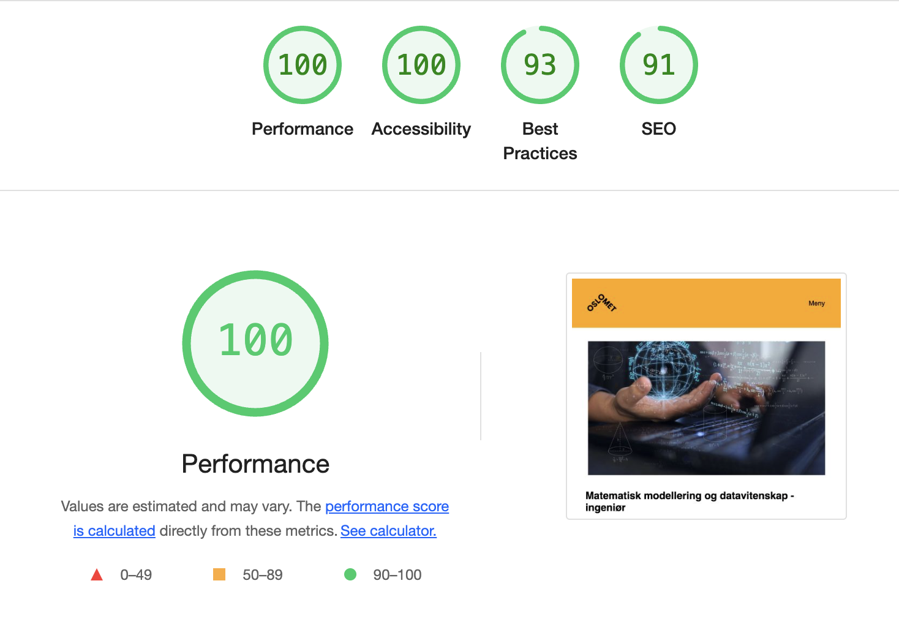
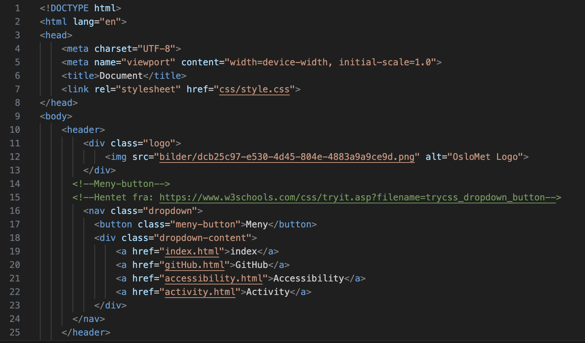
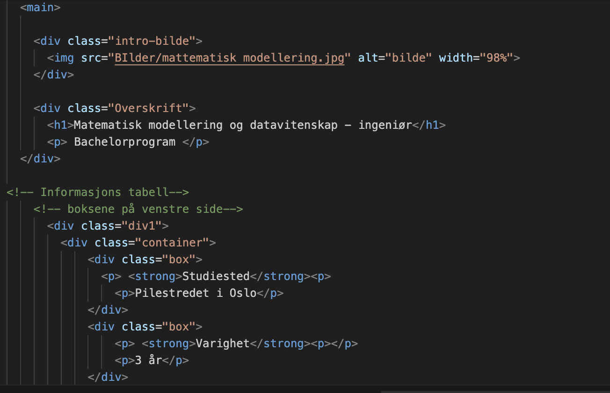
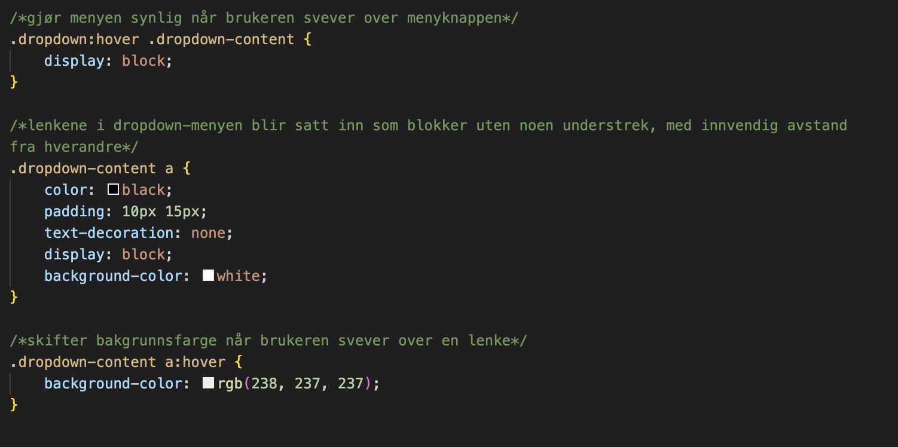

Accessibility
Bilder av testen og kodevalg


Bilder av spesefike endringer


Fordeler med github
Det å sikre at nettsiden vår er tilgjengelig for alle brukere, inkludert de med funksjonsnedsettelser er en prioritet for oss. Vi vil nå fortelle om tilgjengelighetsvalgene som ble tatt under utviklingen av nettsiden og utover resultatene fra den automatiserte testen fra Lighthouse.
Resultater fra automatisert testing
Automatiserte testere er en fin indikator for å evaluere tilgjengelighet. Vår nettside fikk en score på 93 for tilgjengelighet, noe som er en strek indikasjon på at nettsiden vår følger gode praksiser for tilgjengelighet. Automatiserte testere gir imidlertid bare et delvis bilde, de kan identifisere vanlige problemer som manglende alt-tekst for bilder, feilaktig overskriftsstrukturer og fargekontrastbrudd. Vi brukte Lighthouse for å evaluere disse aspektene. Alt-tekst for bilder for å sikre at alle bilder har beskrivende og meningsfull alt-tekst. Fargekontrast for å kontrollere at teksten er lesbar for brukere med synshemninger ved å verifisere tilstrekkelige fargekontrastforhold. Tastaturnavigasjon for å sikre at brukere kan navigere nettsiden ved å bruke bare tastaturet, noe som er essensielt for de som ikke bruker mus. Disse testene bekreftet at nettsiden vår presterer godt på disse områdene, men det betyr ikke at nettsiden er fullt tilgjengelig.
Manuell gjennomgang og tilpassende kodevalg
Automatiserte tester er et godt utgangs punkt i å teste nettsiden, men det er også lurt å gjennomføre en manuell gjennomgang for å fange opp problemer som Lighthouse kanskje ikke oppdager. En manuell gjennomgang betyr å teste nettsiden med faktiske brukere og gjennomgang i ulike nettlesere. Noen nøkkelvalg vi implementerte i koden for å forbedre tilgjengeligheten var å benytte riktige HTML-elementer som header, footer, main og nav som hjelper skjermleseren med å forstå strukturen på nettsiden. Vi passet også på at overskrifter brukes på en hierarkisk måte som h1, h2 og h3 for å hjelpe brukere med å navigere innholdet enkelt. Skjemaer er viktig for interaksjon, men de kan være en frustrasjon for brukere med funksjonsnedsettelser. Vi implementerte derfor klare etiketter for alle skjemaelementer og sørget for at de er knyttet til sine inndatafelter ved å bruke id-attributter. Vi har også sørget for at nettsiden er navigerbar med tastaturet. Designet til nettsiden inkluderer også et tilpasset fargeskjema som viser kontrastforhold mellom tekst og bakgrunnsfarger. Vi har også implementert en menyknapp øvet på nettsiden som gjør det enkelt å gå fra en side til neste side. Meny knappen er også tastatur vennlig fordi vi implementerte i css at når tastaturet eller musen er på en av valgene så vil det valget endre farge. For oss var det viktig at nettsiden er strukturert og vi har brukt grid layout for å hjelpe oss med dette. Vi fant også ut at når vi gjorde skjermen mindre så overlappet mye av innholdet seg vi valgte derfor å sette inn @media i css. Noe annet vi lå merke til når vi testet siden var at når vi hadde dropdown menyene 2 og 2 nedover på virket dette hvordan tabellen så ut. Vi valgte derfor å la tabellen stå alene på en rad med å se andre fortsatt er to og to nedover. Vi fikset dette ved å bruke grid-layout.
Ved å kombinere resultatene fra automatiserte tester med manuell testing og gode kodeprinsipper, har vi skapt en nettside som er strukturert, lett navigerbar, og tilgjengelig for alle. Selv om automatiserte tester som Lighthouse gir oss verdifulle innsikter, var det gjennom manuell gjennomgang vi identifiserte og løste mer komplekse problemer.